Create a Callable Subprocess
A running Process Timeline can call another Process timeline to run as a subprocess. As noted in the Processes and Subprocesses section of the Process Timelines topic, these subprocesses can be called both synchronously and asynchronously. Usually, asynchronous subprocess are used for running automated actions such as PDF conversions, database operations, or other small processes that can run without delaying the parent process that called them.
Synchronous subprocesses, on the other hand, are uniquely useful for adding common approval loops into an existing application. For example, there are many processes, such as contract negotiations, marketing material approvals, or other such processes that must be vetted by legal counsel before final approval. Similarly, maintenance, repair, facilities, or employee onboarding processes may need to call a purchasing approval process in instances where new equipment must be purchased or rented. These Financial or legal approval processes might be called from many different types of parent processes, and must often complete before the parent process can move forward.
Encapsulating these common approvals into stand-alone subprocesses enables you to create and manage them in a single location, while calling and running them from any process that needs to incorporate them. In this walk-through, we'll demonstrate how to create a legal approval process that can be incorporated into any other process that needs to call it as a subprocess.
Creating the Subprocess Form
Our legal Approval process will need two objects, a Form for storing the legal approval information, and a Process Timeline to model the legal approval. We'll need start by creating the Legal Approval Form. Why start here?
There are two important reasons. First, the subprocess needs it's own form because, since we don't know what parent Processes will call the subprocess, we can't directly specify the parent Form we'll need to use when each instance runs. Having a specified Form to use for the legal approval process let's us know ahead of time what Form fields will be needed to supply information to the legal approval process.
Second, because we need this Legal Approval Form to make the subprocess run with any calling process, we'll need to transfer field values from the main Form to the subprocess Form, and, once the legal approval is complete, transfer field values from the subprocess Form back to the main Form. We need to know all of the fields that must be replicated before we can begin configuring the main process and its Form to transfer this field data.
Fortunately, Process Director enables us to do this easily. In Process Director, each Form field has a Synchronize Field Within Process property.
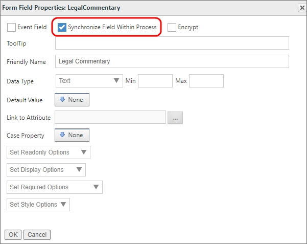
This property, when enabled, will take the value of the configured Form field and transfer that value to any other Form field of the same name, in any other Form used by the process. Let's take the field shown in the example above, LegalCommentary. The field for this Form is set to replicate the value of the field on this Form, which we'll call the source field, to any field named LegalCommentary that exists on any other Form that is referenced by the same Process Timeline, each of which will be a destination field for that Form field value. The Synchronize Field Within Process property will be used to seamlessly transfer data back and forth between our main Form and our subprocess Form.
 Only one Form field should ever be as a source field, so that the data you wish to replicate only comes from a single source. If you set this property on two fields of the same name, they'll attempt to overwrite each other any time either of the Forms load.
Only one Form field should ever be as a source field, so that the data you wish to replicate only comes from a single source. If you set this property on two fields of the same name, they'll attempt to overwrite each other any time either of the Forms load.
Since we'll be needing to perform this replication, building a Legal Approval Form first will enable us to discern both what Form fields from the main form need to be replicated to the Legal Approval Form, and what Legal Approval Form fields must be replicated back to the main form.
Lets' take a look at a sample Legal Approval Form.
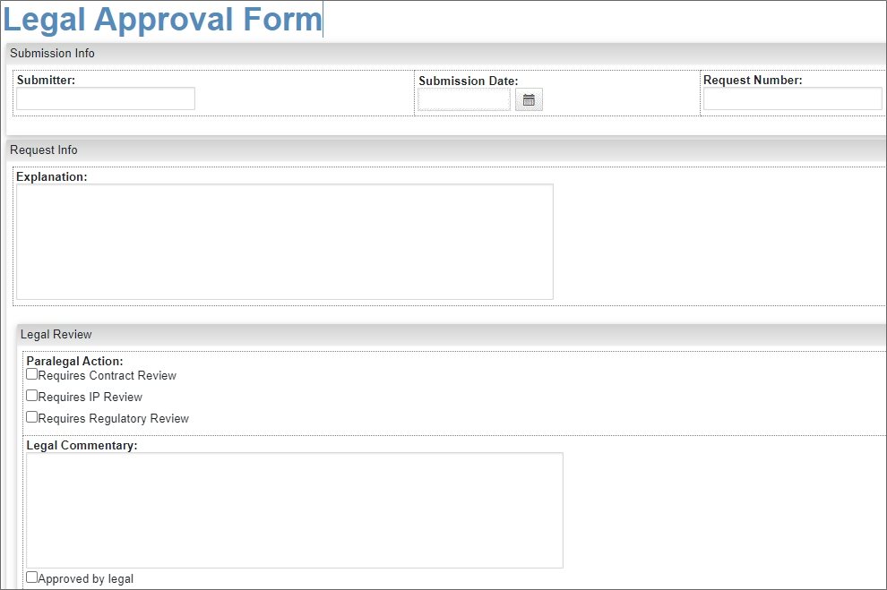
The top portion of the Form contains fields that will display data from the main process. The four fields in the Submitter Info and Request Info sections must be replicated from the main Form. In the Legal Review section at the bottom of the Form, we'll want to replicate the values of the last two fields to the main form. Both Forms will need to have these same six fields, all with the same names, in order to make the replication work properly between the two Forms. Let's take a look at the Form Controls tab of the Legal Approval Form.
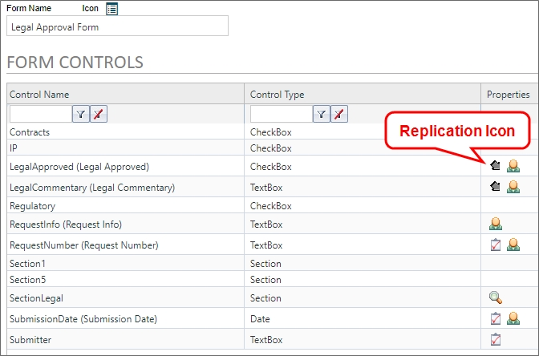
Note that both the LegalApproved checkbox and LegalCommentary textbox have replication icons, meaning that the Synchronize Field Within Process property has been enabled for both fields. Accordingly, every source Form that calls the legal approval subprocess will need to have both a LegalApproved checkbox and LegalCommentary textbox in order for the data to replicated to the parent Form.
Similarly, there are four Fields that must be replicated from the parent form, RequestInfo, RequestNumber, SubmissionData and Submitter. These same four Form fields, with the same names, must exist on every parent Form that calls the subprocess, and all of them must be configured with the Synchronize Field Within Process property.
Knowing which fields must be replicated tells us which fields must exist on every Form that will be used in the process which calls the subprocess.
One final note on the Legal Approval Form is that the Automatically start this process... property isn't set. The subprocess won't start when the Legal Approval Form is submitted, it will start when invoked directly by the parent process. The association between the Form and Process Timeline will, however, be associated both on the Process Timeline definition, and set at run time, as we'll discuss next.
Creating the Subprocess Timeline
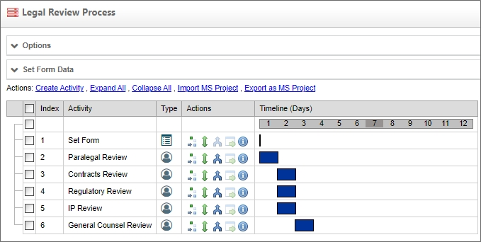
The actual operation of our subprocess, which, in this example, is the Legal Review Process, is largely unimportant to the procedure for calling it. It may have multiple levels of approval or other features. For the purposes of this walk-through, the important aspect of the Legal Approval Process is the Set Form activity. This is the Form Actions activity that will specify the Legal Approval Form as the default form for this Process Timeline. We're doing this here because when this process is called, it will have two different Form instances attached to it: Both the Legal Approval Form, and the parent Form used by the calling process. We need to specify that the Legal Review Process uses the Legal Approval Form as the default Form in the Set Form activity.
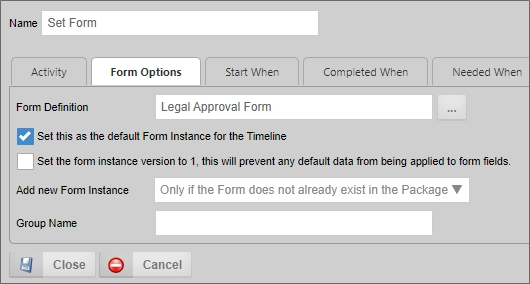
Similarly, we'll set the Form for Timeline property in the Options section of the Process Timeline definition to the Legal Approval Form. Since the parent process is going to pass instances of both the main Form and the Legal Approval Form to the Legal Review Process, we can safely set this property because, again, the Form for Timeline property won't create a new Form instance since an existing Form instance will be passed to the process.
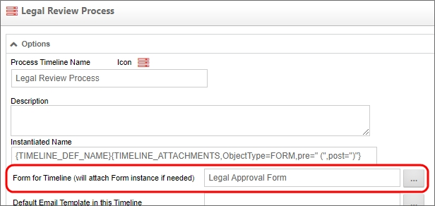
Additionally, setting this property will enables us to use form fields from the Legal Approval Form to create any conditions we might need in the process, such as Start When or Needed When conditions.
Calling the Subprocess
To call the subprocess from any other Process Timeline, we really only need to do two things:
- Ensure the parent Form has the same Form fields we want to use for replication, which we identified previously on the subprocess form.
- Insert a Form Actions and Process activity in the Process Timeline to create the subprocess Form instance and call the subprocess.
To continue our example of calling the Legal Review Process from a parent process, let's look at the application that will call the subprocess. This application has a Form, named Generic Request Form, and a Process Timeline, named Approval Timeline. If we open the Form Controls tab for the Generic Request Form definition we can see the six replication fields exist on the Form.
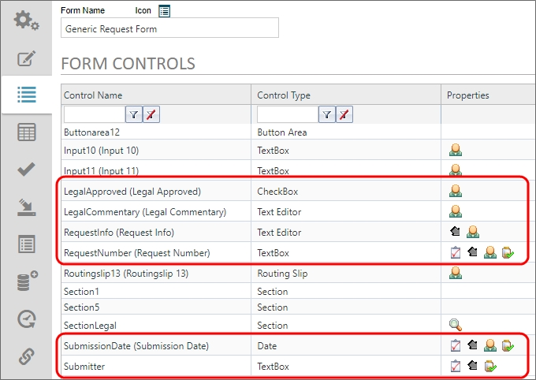
All six of these fields correspond exactly with the six fields that exist on the Legal Approval Form, which we identified previously. The difference is that, on this Form, the LegalApproved and LegalCommentary fields are the destination fields for the replication, while the RequestInfo, RequestNumber, SubmissionDate, and Submitter fields are the source fields. When the Legal Approval Form is created, the values from these four source fields will be passed to it from the Generic Request Form automatically. Similarly, when the LegalApproved and LegalCommentary fields are filled out on the Legal Approval Form, their values will automatically be passed back to the Generic Request Form. Thus, all of the data that needs to be shared between the parent process and subprocess Forms will be passed between the Form Fields as needed.
On the Approval Timeline, we can insert a Form Actions activity and a Process activity at the point where we want to call the subprocess.
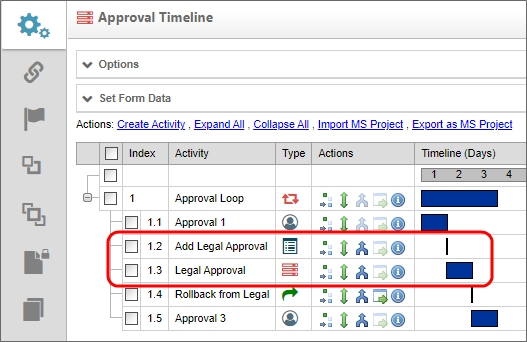
In the example above the two activities have been placed after the Approval 1 user activity, to call the Legal Review Process as a subprocess once the Approval 1 activity is complete.
The Add Legal Approval activity is a Form Actions activity whose only purpose is to create the Form instance of the Legal Approval Form we'll use in the Legal Review Process.
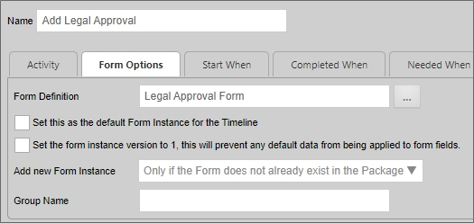
On the Form Options tab of this activity's Properties dialog box, The Form Definition property is set to Legal Approval Form, but the Set this as the default Form Instance for the Timeline property is not checked. We only want to invoke the Form instance to add it to the Process Timeline package, so that the instance exists when we call the subprocess. As we saw previously, we'll set this Form instance as the default Form for the Legal Review Process when it begins. When Process Director creates this Form instance, the four replication source field values will be passed to this new Form instance from the Generic Request Form.
The Legal Approval activity is the Process activity that invokes the Legal Review Process as a synchronous subprocess.
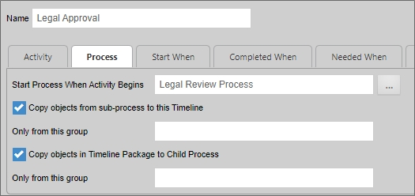
By default, the Process Activity type is set to pass all Timeline References, including Form instances, attachments, etc., to the subprocess from the parent process, and once the subprocess completes, back to the parent process. So, when this activity invokes the Legal Review Process, both the Legal Approval Form and Generic Request Form instances will be copied automatically to the Legal Review Process, so that they exist in its Timeline package on creation. As we saw previously, the Set Form activity of the Legal Review Process will set the Legal Approval Form as the default form for the Legal Review Process.
Once the Legal Approval Form has been filled out and saved/submitted as part of the Legal Review Process, the Values of the LegalApproved and LegalCommentary fields will be replicated to the Generic Request Form automatically. When the Legal Review Process is complete, and the Form instances are passed back to the Approval Process, those field values will be filled out on the Generic Request Form so that the participants of all subsequent activities of the Approval Process can see them.
Other Considerations
When using subprocesses, consider whether you need to keep the Timeline package for the subprocess after it completes. Process Timeline definitions have a property named, Remove Timeline instance after process completes. When checked, this property will automatically delete the timeline instance and all attached objects once the Timeline instance is complete.
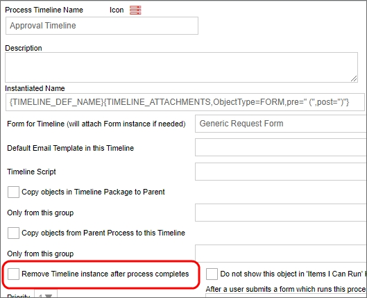
In the parent process, the Routing slip will track the progress and task completion for both the parent and subprocess. You may wish to consider setting this property on the subprocess, to delete the information saved with the Timeline instance, if you feel it is redundant.